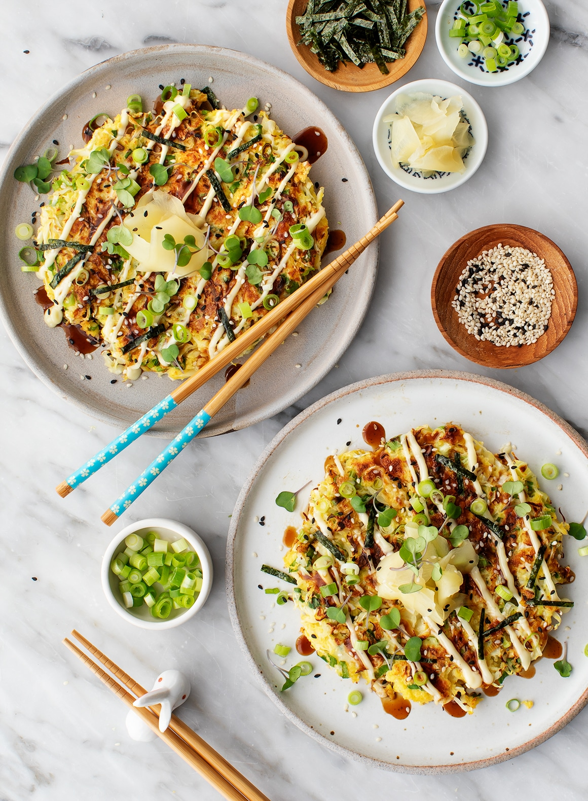

Tortillas with 2 ingredients
Our love for Mexican food is real, and it was only a matter of time before we started making our own corn tortillas from scratch since store-bought can be so hit-and-miss. After much experimentation (and consulting friends for tips) we settled on this easy recipe that’s not only easy to make but also easy to remember!

Prep time
1 hour 20 minutesCook time
10 minutesTotal time
1 hour 30 minutesIngredients
- 1 cup masa harina
- 1 tsp sea salt
- 1 cup masa harina
- 3/4 – 1 cup warm-hot water
- 1 cup masa salt
- 1 tsp sea salt
- 1 cup masa harina
- 3/4 – 1 cup warm-hot water
Ingredients
- Begin by adding masa and salt to a mixing bowl and mixing to combine. Then slowly add the warm-hot water and mix. You’re looking for a Play-Doh-like texture that is moist but not so wet that it sticks to your hands when forming. NOTE: You may not use all the water. If it is still too dry, add a bit more water. If it gets too wet, dry it out with a bit more masa.
- Cover and let rest for 1 hour (or 30 minutes if you’re in a hurry). Once rested, either ready your tortilla press or, if you don’t have a tortilla press, get out a sheet of parchment paper and fold it in half (this is what you will use as a makeshift tortilla press).
- Scoop out a 1 ½ Tablespoon amount of masa dough (we like this scoop) and roll into a ball. Then gently press between your palms to form it into a disc. At this point, it is either ready for your tortilla press, or you can place the disc on one half of the parchment paper and fold the other half over it to cover.
- Use the palm of your hand in a pounding motion over the parchment paper to press dough into a circle shape. Then use a rolling pin, concentrating pressure in the center of the dough to lightly roll out from the center (this helps it not get too thin or spread too fast) until it is not paper thin (that will make it difficult to transfer) but about 1/16 inch thick. You can play around with the thickness to your preference. Too thin and it’s difficult to handle raw. Too thick and it’s more likely to crack when folded. Play around and be patient!
- Heat a medium or large skillet over medium-high heat (we recommend a well-seasoned cast iron). Once pan is hot, add the uncooked tortilla and cook until the edges start to lift away (about 30-45 seconds). Then flip and cook an additional 30-45 seconds. If both sides appear slightly browned, it’s ready! For more well-done tortillas, flip again and cook an additional 15-30 seconds. Repeat this process until all tortillas are cooked.